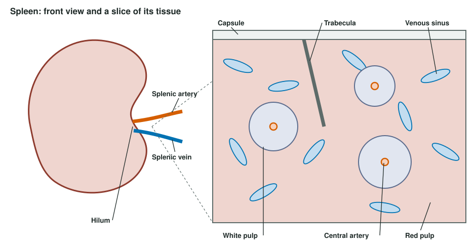

The lymphatic system is a one-way drainage network: it collects the fluid that leaks out of your blood capillaries, filters it through lymph nodes, and pours it back into your veins near your heart. This page follows lymph flow from the tissues to the veins, then covers the lymphatic organs that sit along the way and hold most of your lymphocytes: the lymph nodes, the spleen, the thymus and bone marrow, and the tonsils and other patches of lymphoid tissue in your mucous membranes. It ends with lymphedema, the swelling that follows when drainage fails.
Why you need a second set of vessels
You saw in Capillary exchange that in most tissues fluid filters out of the blood capillaries along almost their whole length, and very little comes back in. Add it up over the day and roughly 8 liters of fluid, carrying some plasma protein, leaves your blood this way. If none of it returned, your blood volume would fall and your tissues would swell steadily.
It returns through the lymphatic system (lymph = clear water, from Latin lympha): a network of vessels that starts blind among your cells and ends in your large veins, with lymphoid organs along the route. It has three jobs:
- Fluid return. It carries filtered fluid and escaped plasma protein back to the blood.
- Filtering and surveillance. The fluid passes through lymph nodes, where macrophages and lymphocytes meet anything that got into the tissues, such as bacteria or viruses.
- Fat transport. Lymphatic vessels in the wall of the intestine carry most absorbed fat away from the gut. After a fatty meal, lymph draining the intestine turns milky. You will see how in the digestive chapter.
Lymph
Once interstitial fluid slips into a lymphatic vessel, it is called lymph. Nothing about the fluid changes at that moment: lymph starts out as interstitial fluid under a new name. It is clear and pale yellow, mostly water with the same small solutes as plasma, plus:
- Protein, less than plasma holds but more than a blood capillary would let back in. Returning this protein is something only the lymphatic route can do, and it keeps the protein level of your interstitial fluid low.
- Cells, mostly lymphocytes, and more of them after the lymph has passed through a node.
- Whatever is in the tissue: debris, cancer cells that have broken off a tumor, and bacteria or viruses from a wound or infection.
Lymphatic capillaries: one-way entry
Look at Figure 1. Threaded among the blood capillaries are lymphatic capillaries: tubes of endothelium closed at one end, slightly wider than blood capillaries. Their walls work differently in three ways.
- Overlapping edges act as flaps. Neighboring endothelial cells overlap loosely instead of being sealed together. When the pressure of the interstitial fluid is higher than inside the vessel, fluid pushes the loose edges inward and flows in. When pressure inside rises, it presses the flaps shut against the cell they overlap, so lymph cannot leak back out.
- Anchoring filaments hold them open. Fine anchoring filaments, made of the same thin protein fibers that form the core of elastic fibers, tie the endothelial cells to the surrounding connective tissue. When fluid builds up and the tissue swells, the filaments pull the vessel open, so drainage speeds up just when the tissue has more fluid to lose.
- Large openings. The gaps between flaps are big enough for protein, cells, and bacteria, all of which enter far more easily than they could enter a blood capillary.
![Left, a bed of blood capillaries between a red arteriole and a blue venule, with green blind-ended lymphatic capillaries threaded among them and among the tissue cells; arrows show fluid leaving the blood capillaries into the tissue and entering the lymphatic capillaries, which join a larger lymphatic vessel. Right, an enlarged lymphatic capillary: its wall is a single layer of overlapping endothelial cells whose loose edges act as flaps, anchored to surrounding collagen fibers. Arrows show interstitial fluid slipping between the flaps into the vessel, where it is lymph, and valves inside the vessel keep it flowing one way.](../figures/os-21-3.jpg)
Lymphatic capillaries lie in almost every tissue that has blood capillaries. Tissues with no blood vessels, such as the epidermis and cartilage, have none either. The main exceptions among tissues that do have blood vessels are bone marrow and the tissue of the brain and spinal cord. The dura around the brain does have lymphatic vessels, one of the routes cerebrospinal fluid takes to the lymph nodes of the neck, as you saw in Meninges, ventricles and cerebrospinal fluid.
From capillaries to ducts
Lymphatic capillaries join into lymphatic vessels, often called collecting vessels. They look like thin veins: the same three layers, with walls thinner, and many more valves. Between one valve and the next, each short segment has smooth muscle in its wall. When lymph fills and stretches a segment, the muscle contracts and pushes the lymph through the next valve. Because the valves open only one way, the segments pump lymph toward the heart, a few contractions a minute at rest.
Lymph has no heart of its own, so three outside forces help, the same ones that help venous return:
- the skeletal muscle pump: contracting muscles squeeze the vessels running between them;
- the respiratory pump: each breath in lowers the pressure in your chest and draws lymph up into the ducts there;
- the pulse of nearby arteries, which squeezes the vessels that run beside them.
That is why lymph flow in a limb nearly stops when it is kept still, and why walking or moving your arm drains it.
Collecting vessels pass through lymph nodes, then merge into large lymphatic trunks, each named for the region it drains: the paired lumbar trunks (legs and pelvis), the intestinal trunk (the gut), and the paired bronchomediastinal, subclavian and jugular trunks (chest, arms, and head and neck). The trunks empty into two ducts (Figure 2):
- The thoracic duct is the larger. It begins in the upper abdomen, in front of the first two lumbar vertebrae, as a sac called the cisterna chyli (cisterna = reservoir; chyli = of the milky juice), which receives the lumbar and intestinal trunks. It runs up in front of the spine, through the chest, and empties into the junction of the left internal jugular and left subclavian veins. It drains both legs, the abdomen and pelvis, the left arm, the left side of the chest and the left side of the head and neck: about three quarters of the body.
- The right lymphatic duct is short. It drains only the right arm, the right side of the chest and the right side of the head and neck, and empties into the junction of the right internal jugular and right subclavian veins.
![A front view of the body shaded in two colors: the right arm, the right side of the head and neck and the right side of the chest in purple, and everything else in yellow. A duct runs up in front of the spine from a small sac in the upper abdomen, the cisterna chyli, to the left side of the neck. Enlarged boxes show, on the right, a short duct joining the right internal jugular and right subclavian veins, and on the left, the thoracic duct joining the left internal jugular and left subclavian veins.](../figures/os-21-4.jpg)
Tracing lymph from a splinter in your left foot
- Fluid in the tissue around the splinter enters a lymphatic capillary between its endothelial flaps.
- It flows through collecting vessels up the leg, pushed by their valved segments and your calf muscles.
- It is filtered by lymph nodes behind the knee and in the groin.
- It joins the left lumbar trunk, then the cisterna chyli.
- It climbs the thoracic duct in front of the spine.
- It enters the blood at the junction of the left internal jugular and left subclavian veins, and from there travels to the superior vena cava.
A splinter in your right thumb would take a shorter path: nodes in the right armpit, the right subclavian trunk, the right lymphatic duct, and the right venous junction.
Where lymphocytes are made and where they work
Lymphoid tissue is connective tissue packed with lymphocytes, held in a mesh of reticular fibers with macrophages scattered through it. The organs built from it come in two kinds.
- Primary lymphoid organs are where lymphocytes are made and mature. There are two: the red bone marrow, where every lymphocyte is made and one of the main lines of lymphocytes finishes maturing, and the thymus, where the other main line matures.
- Secondary lymphoid organs are where mature lymphocytes collect and meet the foreign molecules, the antigens, they can recognize: the lymph nodes, the spleen, and the lymphoid tissue in the mucous membranes, including the tonsils.
| Primary lymphoid organs | Secondary lymphoid organs | |
|---|---|---|
| Examples | Red bone marrow, thymus | Lymph nodes, spleen, tonsils, Peyer's patches, appendix, other lymphoid nodules in mucous membranes |
| What happens there | Lymphocytes are made and mature | Mature lymphocytes gather and meet antigens |
| Antigen from outside needed? | No: maturing happens before the cells meet any foreign antigen | Yes: antigen arrives in lymph, blood or across a mucous membrane |
| Effect of losing it in an adult | Losing the marrow is fatal without a transplant; losing the thymus late in life has little effect, because mature lymphocytes already fill the other organs | Losing one (such as the spleen or a group of nodes) weakens defense in that route but is survivable |
The anatomy of the whole system is in Figure 3. Notice that nodes cluster where limbs join the trunk: in the armpits, the groin and the neck.

The thymus
You met the thymus in the endocrine chapter as the gland behind the sternum that releases thymosin. As a lymphoid organ, it is where one line of lymphocytes, made in the marrow, travels to mature. Each lobule has an outer cortex packed with dividing, maturing lymphocytes and a paler inner medulla. Maturing lymphocytes are tested there, and the great majority fail and die by apoptosis; you will see what they are tested for two topics from now. The thymus is largest relative to body size in childhood. After puberty it slowly shrinks and fills with fat, though it keeps turning out some new lymphocytes into adult life.
The lymph node
You have about 500 to 700 lymph nodes, each a bean-shaped organ from 1 or 2 millimeters to about 2 centimeters long. Their structure (Figure 4) makes lymph slow down and pass close to macrophages and lymphocytes.

- Capsule and trabeculae. A capsule of dense connective tissue surrounds the node and sends partitions, trabeculae, inward. A mesh of reticular fibers fills the spaces between.
- Afferent lymphatic vessels (af- = toward, fer- = carry) bring lymph in. There are several, entering all over the curved surface, each with valves that stop backflow.
- Sinuses. Lymph pours into the subcapsular sinus, a narrow space just under the capsule, then trickles through sinuses in the cortex and medulla. The sinuses are crossed by reticular fibers and lined with macrophages, which engulf bacteria, debris and cancer cells by phagocytosis as lymph seeps past.
- Cortex. The outer cortex holds lymphoid nodules (also called follicles): round clusters of lymphocytes of the line that can turn into antibody-releasing cells. When a nodule's lymphocytes meet their antigen, a paler germinal center forms in its middle, where those lymphocytes multiply rapidly.
- Paracortex (para- = beside), the deep cortex, holds mostly the thymus-matured line of lymphocytes. Lymphocytes enter the node from the blood here, through high endothelial venules: small venules lined with unusually tall, cube-shaped endothelial cells that circulating lymphocytes stick to and squeeze between.
- Medulla: cords of lymphocytes and macrophages, with medullary sinuses between them, running toward the hilum.
- Hilum. At the indented side, one or two efferent lymphatic vessels (ef- = away) carry lymph out, and the node's artery and vein enter and leave.
Two features slow the lymph. There are more afferent vessels than efferent ones, and the maze of sinuses has a wide total cross section. Lymph therefore lingers in the node, giving macrophages time to clear it. The node also changes lymph: blood capillaries inside it take back a good share of its water, so the lymph that leaves is less in volume and richer in lymphocytes.
Swollen nodes
When lymphocytes in a node meet the antigen they recognize, they multiply, and more lymphocytes are held back from leaving. Within days the node swells and often becomes tender: the "swollen glands" under your jaw during a sore throat. A node that is hard, painless and keeps growing is different: it may hold cancer cells that arrived in lymph and are dividing there. Surgeons remove and examine the first node or nodes draining a tumor, because that is where cancer spreads first.
The spleen
The spleen (Figure 5) is the largest lymphoid organ: soft, dark red and about the size of your fist, around 150 grams. It lies in the upper left abdomen, behind the stomach and under the 9th to 11th ribs. The splenic artery enters and the splenic vein leaves at its hilum. Unlike a lymph node, the spleen has no afferent lymphatic vessels. It filters blood, not lymph.

Inside a thin capsule and trabeculae, the spleen has two kinds of tissue:
| White pulp | Red pulp | |
|---|---|---|
| What it looks like | Pale islands, each wrapped around a small central artery | Dark red tissue filling the rest of the spleen, about three quarters of it |
| What fills it | Lymphocytes, arranged much like a lymph node's cortex and paracortex | Blood in spongy cords of reticular tissue, and wide, leaky venous sinuses |
| Main job | Lymphocytes meet antigens carried in the blood | Macrophages remove old and damaged red blood cells, platelets and microbes from the blood |
| System it belongs to | Immune defense | Blood maintenance, and defense by phagocytosis |
The red pulp works like a squeeze test. Blood flows out of small arteries into the cords, then has to push through narrow slits in the walls of the venous sinuses. A healthy red blood cell folds and squeezes through. An old, stiff red cell, or one deformed by sickle cell disease, gets stuck, and a macrophage engulfs it. The iron from its hemoglobin is recycled, as you saw in the red cell life cycle. The same macrophages remove bacteria from the blood, especially bacteria wrapped in a slippery sugar coat, which are hard to engulf anywhere else.
The spleen also holds about a third of your platelets in reserve, and before birth it helps make blood cells.
Living without a spleen
The spleen is easily torn when the left lower ribs are hit, for example in a car crash or a contact sport, and because blood flows through it so fast, a torn spleen can bleed heavily into the abdomen. An enlarged spleen, for example during infectious mononucleosis, tears more easily. Surgeons now repair or leave a damaged spleen when they safely can, because removing it has a lasting cost. Without a spleen:
- old and misshapen red cells stay in circulation longer, and the platelet count rises, because the platelets the spleen used to hold in reserve now circulate;
- the liver's macrophages take over much of the filtering, but not all of it;
- the risk of an overwhelming bloodstream infection with sugar-coated bacteria rises for life. People without a spleen get extra vaccines against those bacteria and are told to seek care at the first sign of a fever.
Lymphoid tissue in the mucous membranes
The places microbes most often get in are the mucous membranes of your airways and gut, and lymphoid tissue waits just beneath them. Mucosa-associated lymphoid tissue (MALT) is the general name for these collections: lymphoid nodules in the lamina propria of the mucous membranes, without a capsule. The best-known ones are:
- Tonsils, which form a ring around the entrance to the throat. The single pharyngeal tonsil (called the adenoids when enlarged) sits on the back wall of the upper throat, behind the nose. The paired palatine tonsils sit on each side at the back of the mouth: these are what most people mean by "the tonsils". The lingual tonsil lies at the back of the tongue. Tonsils have deep pits, called crypts, lined by the surface epithelium. The crypts trap food particles and bacteria, bringing them close to the lymphoid nodules beneath.
- Peyer's patches: clusters of lymphoid nodules in the wall of the intestine, most of them in its last stretch before the colon. Special epithelial cells over them pass samples of the gut contents to the lymphocytes underneath.
- The appendix, whose wall is thick with lymphoid nodules.
- Bronchus-associated lymphoid tissue (BALT) in the walls of the airways.
Lymphedema
Go back to the idea that lymphatics return all the fluid the capillaries filter. If the lymphatics in a region are missing, blocked or removed, that fluid, with its protein, stays in the tissue. Lymphedema is the swelling that results.
- Secondary lymphedema, from damage, is the common kind. In wealthy countries the usual cause is cancer treatment: removing the lymph nodes of the armpit during breast cancer surgery, or radiation to them, can leave the arm swollen months or years later. Worldwide the leading cause is lymphatic filariasis, in which tiny parasitic worms spread by mosquitoes live in and block the lymphatic vessels, causing massive swelling of the legs.
- Primary lymphedema comes from lymphatic vessels that did not develop normally. It is rare and can appear at birth, at puberty or later.
Lymphedema is not just ordinary edema in one limb. The fluid is rich in protein, and the stagnant fluid keeps drawing white blood cells, mainly lymphocytes, into the tissue. Over months, the chemical signals those cells release drive fibroblasts to lay down collagen and fat to build up. The limb becomes firm and thick, the swelling stops pitting under a thumb, and the stagnant fluid makes skin infections more likely. Treatment works by moving fluid through what drainage remains: compression garments, gentle massage that pushes lymph toward working vessels, and exercise.
| Edema from high capillary pressure | Lymphedema | |
|---|---|---|
| What fails | Filtration outruns a normal drainage system | Drainage fails at a normal filtration rate |
| Typical cause | Heart failure, standing still for hours, a blocked vein | Lymph nodes removed or irradiated; parasitic worms; abnormal development |
| Protein in the fluid | Low | High |
| Pitting | Pits easily | Pits early, then becomes firm and non-pitting |
| Usual pattern | Often both legs, or wherever gravity pulls | Usually one limb or region, the one the damaged lymphatics drained |
| Response to raising the limb | Improves quickly | Improves slowly, if at all, once tissue has firmed |
Summary
The lymphatic system returns filtered fluid and plasma protein to the blood. Interstitial fluid enters blind-ended lymphatic capillaries between overlapping endothelial flaps and becomes lymph. Valved collecting vessels, helped by their own smooth muscle and by the muscle and respiratory pumps, move it through lymph nodes into trunks and then into two ducts: the thoracic duct, from the cisterna chyli, drains about three quarters of the body into the left venous junction, and the right lymphatic duct drains the right arm, chest and head into the right one. Red bone marrow and the thymus are primary lymphoid organs, where lymphocytes are made and mature. Lymph nodes, the spleen and MALT are secondary ones, where lymphocytes meet antigens. A node filters lymph through its sinuses; the spleen filters blood, with white pulp for lymphocytes and red pulp for removing old red cells and bacteria. Lymphedema is protein-rich swelling where drainage fails.